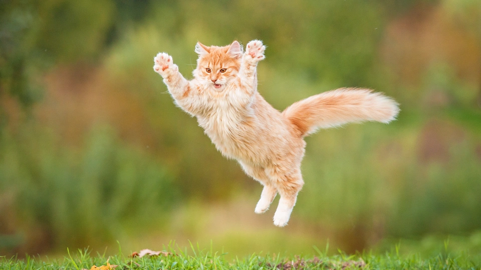

Cats
The cat, commonly referred to as the domestic cat or house cat, is the only domesticated species in the family Felidae. Recent advances in archaeology and genetics have shown that the domestication of the cat occurred in the Near East around 7500 BC.
this is a new line
Origin
The domestic cat, scientifically known as Felis catus, has a fascinating history that dates back thousands of years. Its origin is often traced to the Near Eastern wildcat, Felis silvestris lybica, native to the Middle East and Northeast Africa.
The domestication of cats is believed to have begun around 9,000 years ago in the Near East. This process likely started when humans transitioned from nomadic to agrarian societies.This process likely started when humans transitioned from nomadic to agrarian societies. As people began to settle and store surplus crops, these granaries attracted rodents, which in turn drew wildcats. The relationship between humans and these wildcats was mutually beneficial: the cats helped control the rodent population, and in return, they gained a steady source of food.
Date: 10th JanuaryFebruary
The world is flat.
Breeds of cats
- Persian
- Siamese
- Main Koon
- Bengal
Breeds of cats
- Persian
- Siamese
- Main Koon
- Bengal
Gallery


Cat table
| ID | Breed | Origin | Coat type |
|---|---|---|---|
| 1 | Persian | Persia | Long |
| 2 | Siamese | Thailand | Long |
| 3 | Ragdoll | Usa | Long |